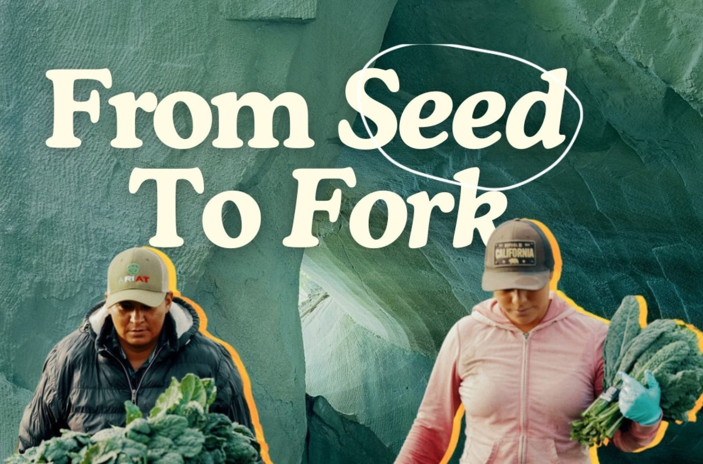

Harnessing Organic Farming to Tackle Climate Change
- by Nature's Path 15 January 2025
When we think about the culprits behind climate change, we often picture smokestacks, car exhaust, and deforestation. But one of the biggest contributors lies in a less obvious place: the food we eat and how it’s grown. Agriculture accounts for approximately 17% of global greenhouse gas emissions, according to the United Nations Food and Agriculture Organization (FAO), with industrial farming practices being a major driver.1
The good news? Agriculture isn’t just part of the problem; it can also be a powerful solution. Nature’s Path Organic Foods and Center for Food Safety believe that organic farming holds the key to addressing some of the biggest challenges of our time, from climate change to food security. We’re partnering together to elevate the power of organic farming and amplify visionary legislation within the Farm Bill like the Agriculture Resilience Act, which offers a pathway to a healthier planet and a more sustainable food system.
Here is why the Agriculture Resilience Act can, if passed, make a real difference in transforming our food system and combating climate change:
Industrial Agriculture: A Climate Crisis Driver
Industrial agriculture—the dominant model of farming today—relies on practices that deplete natural resources and contribute heavily to climate change. Here are the primary ways it harms the environment:
1. Greenhouse Gas Emissions
Industrial farming generates significant greenhouse gases. Livestock production by industrial-sized factory farms, or Concentrated Animal Feeding Operations (CAFOs), alone accounts for about 14.5% of global emissions, with methane from cattle and nitrous oxide from poorly managed manure and synthetic fertilizers being key culprits.Meanwhile, large-scale monocropping, which prioritizes single crops like corn and soy, contributes to soil degradation and the release of stored carbon into the atmosphere.
2. Deforestation and Land Use
Industrial farming often expands at the expense of forests, which are critical carbon sinks. Each year, approximately 10 million hectares of forest are cleared globally, much of it for agricultural use. This not only releases carbon, but also reduces the planet’s capacity to absorb CO2.
3. Overuse of Chemical Inputs
Synthetic fertilizers and pesticides—cornerstones of industrial farming—are energy-intensive to produce and apply. They also release nitrous oxide, a greenhouse gas about 300 times more potent than CO2. Runoff from these chemicals pollutes waterways, causing dead zones in oceans and harming ecosystems.
4. Soil Degradation
Industrial farming methods strip the soil of its organic matter, reducing its ability to retain carbon. Globally, soil erosion releases up to 1.5 billion tons of CO2 annually.5 This not only accelerates climate change but also undermines long-term food security.
Organic Agriculture: A Climate Solution
Organic farming represents a transformative alternative to industrial agriculture. By working with nature rather than against it, organic practices can help mitigate climate change while fostering healthier ecosystems. Here’s how:
1. Organic Increases Carbon Sequestration
Organic farming prioritizes soil health through practices like crop rotation, cover cropping, and composting. These methods increase soil organic matter, enabling soils to act as carbon sinks. Studies have shown that organic farms can sequester up to 25% more carbon than conventional industrial farms.
2. Organic Contributes to Reduced Emissions
Organic agriculture avoids synthetic fertilizers and pesticides, drastically reducing nitrous oxide emissions by up to 40%. It also emphasizes diversified farming systems with careful nutrient management, which can lower methane emissions by integrating crops and livestock in more sustainable ways.
3. Organic Protects Biodiversity and Resilience
By fostering biodiversity both above and below ground, organic farming creates more resilient ecosystems. This not only helps farms withstand extreme weather, but also supports pollinators, natural pest control, and water conservation. Organic increases the microbial diversity of soil by up to 40%, and creates a safer habitat for human, animal, and insect life.
4. Organic Promotes Energy Efficiency
Organic systems use up to 45% less energy than conventional systems per unit of crop produced. This is largely because they eliminate the energy-intensive processes associated with synthetic inputs.
What now? The Agriculture Resilience Act: A Policy for Change
We need to advocate together for legislative policy that invests in the bright food future we all want. The Agriculture Resilience Act, introduced as part of the draft U.S. Farm Bill currently under consideration, is a groundbreaking piece of legislation that recognizes the dual role of agriculture in climate change and needs our support to get passed. By leveraging organic farming as a key strategy, it lays out a roadmap for transforming agriculture from a climate problem to a climate solution. Here are the key provisions:
1. Achieving Net-Zero Emissions by 2040
The act calls on the USDA to finalize and implement a plan to achieve net-zero greenhouse gas emissions from agriculture by 2040. This ambitious goal includes expanding support for practices that sequester carbon and reduce emissions, with organic farming front and center.
2. Expanding Technical Assistance
Transitioning to organic practices can be daunting for farmers. The Agriculture Resilience Act increases funding for much needed technical assistance programs that help farmers adopt cover cropping, composting, and other climate-smart, organic techniques.
3. Boosting Research and Education
The act prioritizes research into organic and regenerative farming methods. It also supports education initiatives to train new generations of farmers in climate-resilient, organic practices.
4. Supporting Renewable Energy
By promoting renewable energy solutions for rural areas, the act helps reduce agriculture’s reliance on fossil fuels. Solar panels on farms and biogas systems for manure management are just a few examples of how this can work.
5. Reducing Food Waste
Food waste is a major contributor to climate change, responsible for about 8-10% of global emissions.10 The act provides grants to schools and communities to reduce food waste, keeping it out of landfills and turning it into compost to enrich soils.
Why It Matters
The stakes couldn’t be higher. Climate change threatens global food
security,
with rising temperatures and unpredictable
weather making it harder for farmers to grow our food. At the same time, the way we farm today
is
accelerating the
problem. Organic agriculture offers a proven pathway to a sustainable food future, but farmers
need
the right resources
and support to make the transition.
The Agriculture Resilience Act, as part of the Farm Bill, is a bold step toward aligning U.S.
agriculture with climate
goals. By investing in organic farming, we can empower farmers to lead the charge against
climate
change while ensuring
a healthier, more equitable food system for future generations.